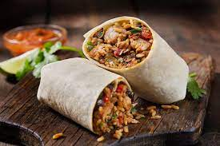

Burritos

Description
Chipotle style Burritos
Ingredients
- Chicken Thighs
- Poblano Peppers
- Tortillas
- Red Onion
- Jalapenos
- Chipotles in Adobo Sauce
- Avocado
Steps
- Trim chicken thighs and marinate in a plastic bag with the chipotles in adobo sauce.
- Begin heating up your cast iron skillet and grill.
- Cut the veggies into long slices.
- Once preheated, grill the chicken and saute the veggies in the pan.
- After the chicken is fully cooked, remove from the grill and let it cool on a cutting board. Once cooled, cube the chicken.
- Heat tortillas for 15 seconds in microwave.
- Smush avocado onto the tortilla and then top with fajita veggies and chicken.
- Roll up the burrito.
- Enjoy!